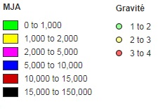

Your JavaScript is disabled
Please enable JavaScript to view the map.
Conditions météo
Tout
Normales
Pluie
Neige ou grêle
Luminosité
Tout
Plein jour
Crépuscule ou aube
Nuit
Nuit avec éclairage
Type du trajet
Tout
Domicile-travail
Domicile-école
Courses
Utilisation professionnelle
Promenade
Catégorie véhicules
Tout
Vélos
Cyclos et assimilés
VL est assimilés
PL et TC
2RM et assimilés
Autres
Sexe des victimes
Tout
Hommes
Femmes
Gravité
Bléssé léger
Blessé grave
Tué
Age des victimes
Tout
0-20
20-40
40-60
60-80
Plus de 80
Age des conducteurs
Tout
0-16
16-18
18-25
25-65
Plus de 65
Heure de l'accident
Tout
5-7
7-10
10-12
12-14
14-16
16-20
20-00
00-5
Jour de la semaine
Tout
Lun
Mar
Mer
Jeu
Ven
Sam
Dim
Weekend
Tout
Non
Oui
Mois de l'année
Tout
1
2
3
4
5
6
7
8
9
10
11
12
Année de l'accident
Tout
2005
2006
2007
2008
2009
2010
2011
2012
2013
2014
2015
2016
